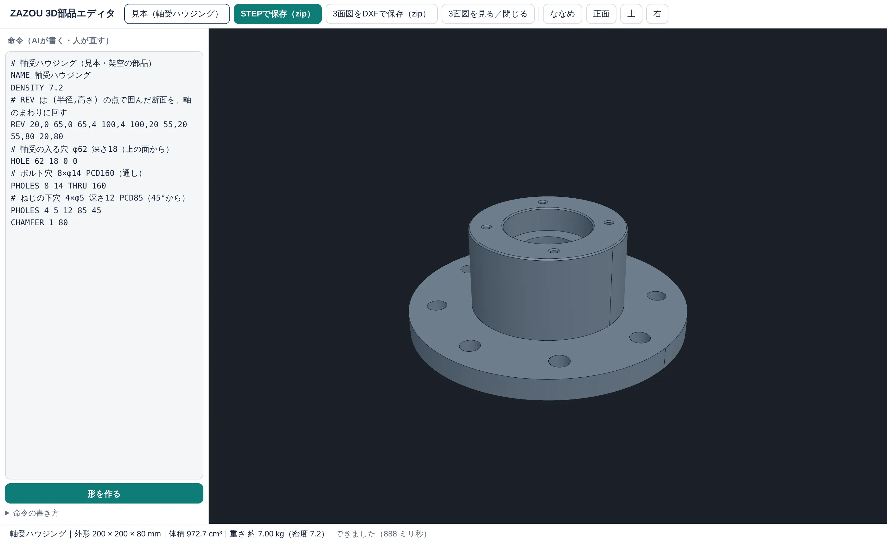
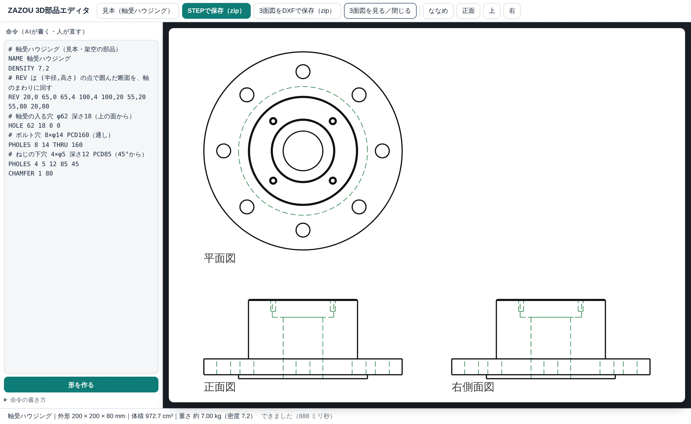

3D部品エディタ：
円柱・箱・回転・穴・面取りなどの命令から部品の3Dモデルを作り、STEP形式で保存し、3面図（見える線・かくれ線）をDXFで出す、自社開発の試作ソフトです。体積と重さも出します。
2026年11月に作り始めた試作です。下に、確かめたことと、まだのことを分けて書いています。

図面の仕事では、2次元の図面から3Dモデルを起こしてほしい、STEPで渡してほしい、という依頼があります。先方のCADを持っていなくても、共通の形式（STEP）で納められるように作りました。
2次元の図面エディタと同じく、AIが寸法の命令を書き、人が画面で形と寸法を確かめて直す、という流れに合わせています。形をつくる心臓部には、公開されている3D形状の部品（OpenCascade）を使っています。

# 軸受ハウジング（見本・架空の部品） NAME 軸受ハウジング DENSITY 7.2 REV 20,0 65,0 65,4 100,4 100,20 55,20 55,80 20,80 HOLE 62 18 0 0 PHOLES 8 14 THRU 160 PHOLES 4 5 12 85 45 CHAMFER 1 80
上の8行が、画面の部品の命令のすべてです。AIはこの形の命令を書き、人は数字を見て直します。
部品の設計と図面出しにしぼった試作です。市販の3D CADの代わりになるものではありません。先方のCADの元データ（SolidWorks の部品ファイルなど）そのものは作れないため、STEPでの納品でよいかを最初に伺います。
松村貴士（ZAZOU株式会社 代表）。パナソニックで2005〜2020年、チューナの機構設計、洗濯機・ロボット掃除機の開発に携わり、3Dで設計して図面を描き、読んできました（CATIA・NX・SolidWorks・MICRO CADAM Helix）。
図面エディタ：DWG・DXFを開いて、描いて、直す3Dモデルの作成・図面への追記や修正のご相談を受けています。メール：matsumura.takashi@zazoucorp.com